Re-check (withdraw control)
Run on 2026-11-24 against the new frontend and backend (features/meetings/TermCards.tsx), with a 400×860 viewport. Re-check data: circle "E2E Wypis krąg", 10 Dec (PAID) and 17 Dec (UNPAID) terms, place Jelenia Góra. Scenarios 4.12–4.14.
| # | Check | Result |
|---|---|---|
| R1 | "Wypisz się" button on each "Biorę udział" card | ✅ 2 cards, 2 buttons |
| R2 | UNPAID → "Wypisać się z terminu?" without a refund note | ✅ "Znikniesz z listy zapisanych na ten termin." only |
| R3 | "Anuluj" does not withdraw | ✅ Dialog closed, both cards kept, API: both active |
| R4 | PAID → refund note | ✅ "… Płatność jest oznaczona jako opłacona — zwrot ustalasz z organizatorem." |
| R5 | Confirm → toast, card removed | ✅ "Wypisano z terminu"; 10 Dec card gone |
| R6 | Organizer: "wypisany — do zwrotu" row | ✅ Pill + note, presence disabled, switch on and enabled, "Brak zapisów" |
| R7 | Re-signup from the term page | ✅ Cost line in the dialog; footer "✓ Opłacone", no "Zapłać" |
| R8 | "Moje zajęcia" after the re-signup | ✅ 10 Dec card back with "✓ Opłacone" |
| R9 | Organizer row back to normal | ✅ "przychodzi bez dzieci", switch on, "1 zapis · 0 dzieci · opłaceni: 1" |
| R10 | Console | ✅ Only the baseline /api/organizations/mine 404 |
Result: 5.2-1 is resolved. Refund and reactivation can now be reached by users.
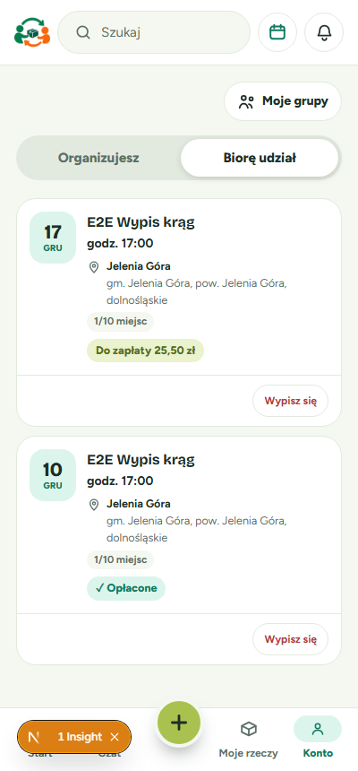
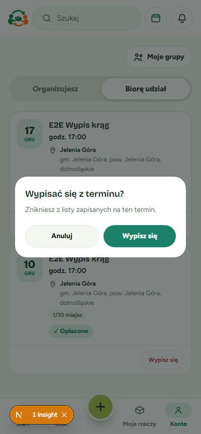
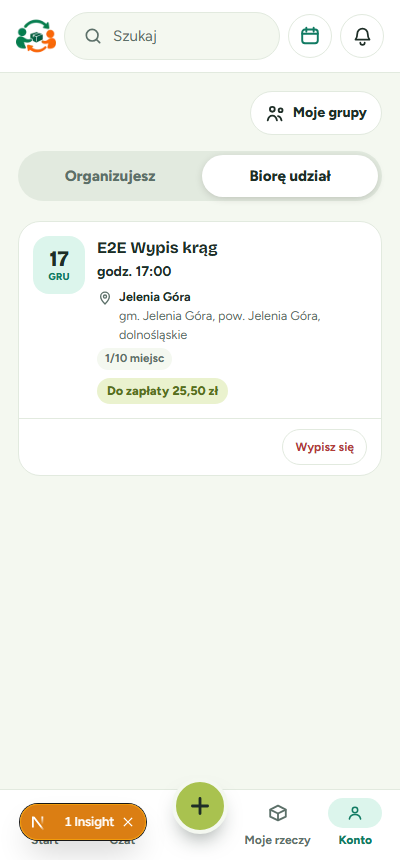
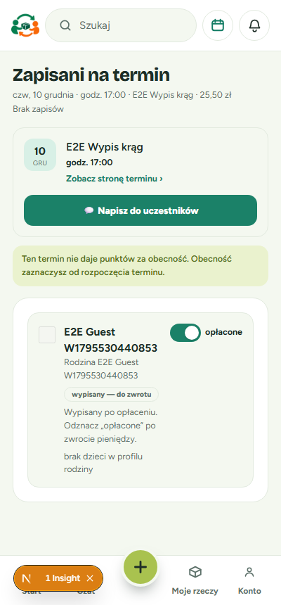
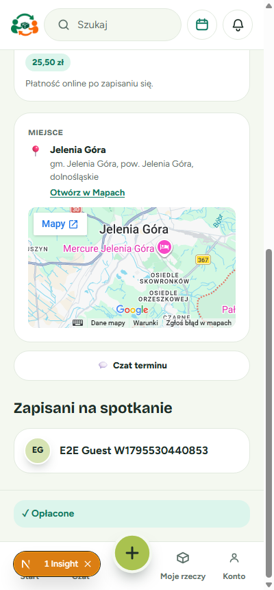

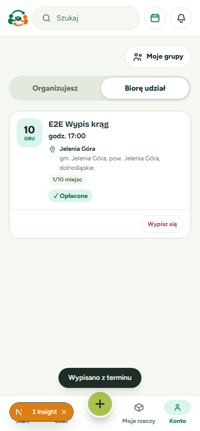
Test environment
| Base URL | http://localhost:5173 (Next 16.4.4 dev, /api → :8080, DB at 0106; dev server started by the verifier) |
|---|---|
| Viewport | 400×860 |
| Accounts | First run: throwaway organizer "E2E Org 1764000001" and guest "E2E Guest 1764000001" (example.com), plus anonymous. Re-check: new throwaway organizer and guest "E2E Guest W1795530440853" (example.com) |
| Data | Public circle "E2E Płatny krąg" (25,50 zł + https://example.com/pay), terms 5 Dec and 12 Dec 2026, place Poznań. Re-check: circle "E2E Wypis krąg", terms 10 Dec (PAID) and 17 Dec (UNPAID) 2026, place Jelenia Góra |
Scenarios
4.1 Circle with a default price and link, plus validation — ✅ Passed
- ✅ Fields and hints after the capacity field
- ✅ Price 0 → "Podaj kwotę od 0,01 do 100 000 zł albo zostaw puste.", submit disabled
- ✅ http://x → "Link musi zaczynać się od https://"
- ✅ Link without price → "Link wymaga ceny — wpisz cenę albo usuń link."
- ✅ Saved; edit prefilled 25,50; API "25.50" / EXTERNAL_LINK
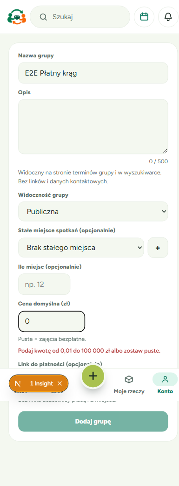
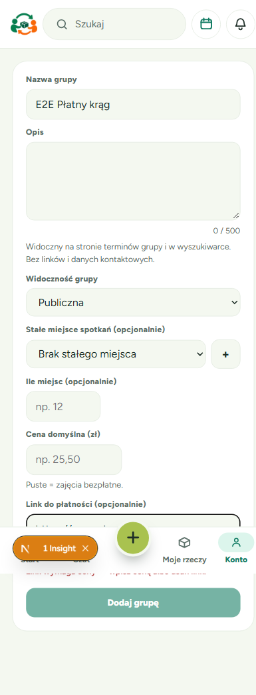

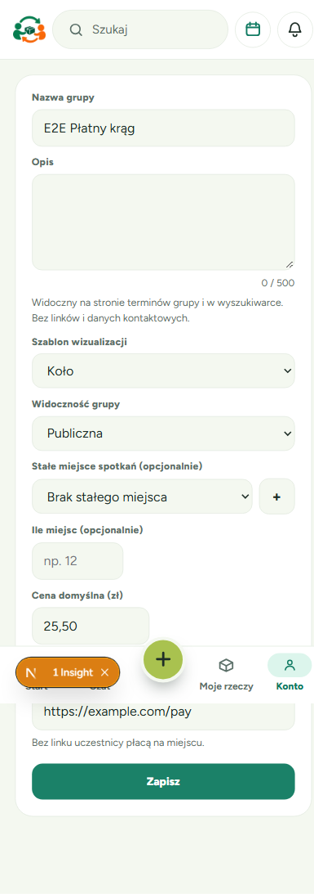
4.2 "Dodaj termin": prefill and hint — ✅ Passed
- ✅ Hint under the title; price and link prefilled
- ✅ Prefill kept after adding a place via +
- ✅ 25,555 and a 508-char link → two verbatim errors, submit blocked
- ✅ Term 5 Dec 17:00 saved ("Dodano termin")
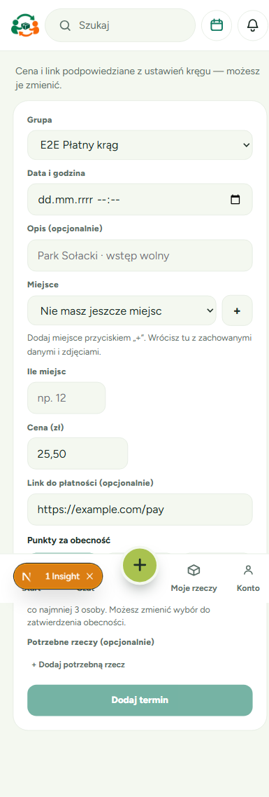
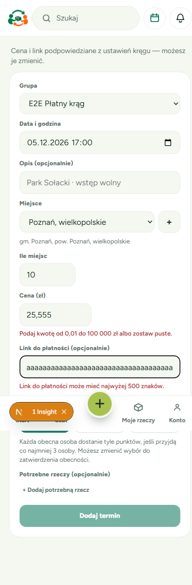
4.3 Guest: price badge, RSVP cost line, sign up — ✅ Passed
- ✅ Badge "25,50 zł" + "Płatność online po zapisaniu się."
- ✅ Dialog "Koszt: 25,50 zł — zapłacisz po zapisaniu"
- ✅ Signed up
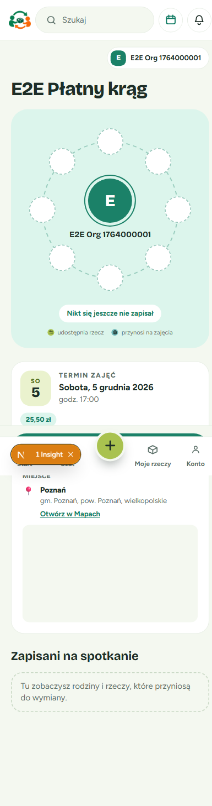

4.4 Guest: "Zapłać ↗" footer, Moje zajęcia "Do zapłaty" — ✅ Passed
- ✅ <a href="https://example.com/pay" target="_blank" rel="noopener noreferrer"> "Zapłać 25,50 zł ↗" (not followed)
- ✅ Badge "Do zapłaty 25,50 zł" (accent-soft)
- ⚠️ Footer behind the bottom nav until the end of the page (5.3-1, existing)

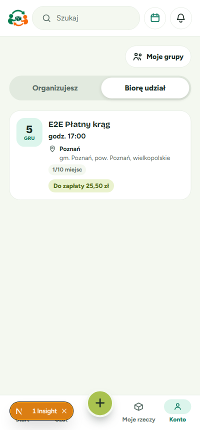
4.5 Organizer toggles "opłacone" — ✅ Passed
- ✅ Subtitle "… · 25,50 zł"; "1 zapis · 0 dzieci · opłaceni: 0"
- ✅ Switch on → aria-checked=true, bg-mint, "opłaceni: 1"; persisted after a reload
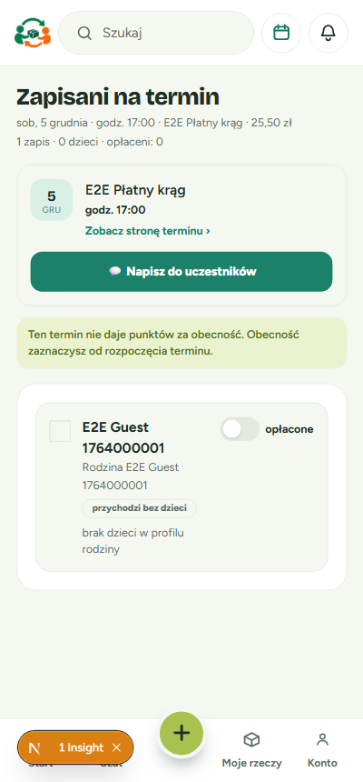
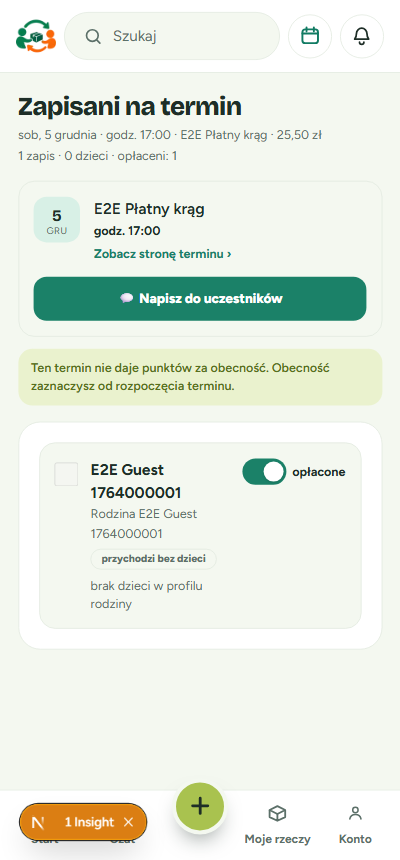
4.6 Guest: "✓ Opłacone" (term page + Moje zajęcia) — ✅ Passed
- ✅ Footer "✓ Opłacone" bg-primary-soft text-primary-fg, no Zapłać
- ✅ Badge "✓ Opłacone", same tokens (D5)
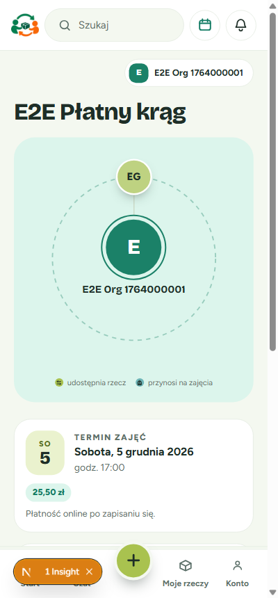
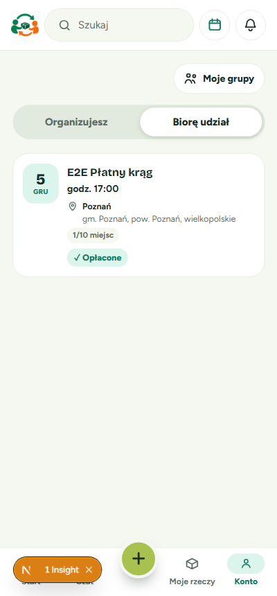
4.7 Guest withdraws; organizer sees "wypisany — do zwrotu" — ✅ Passed (re-checked)
- ✅ First run: no control, so the API was used (5.2-1). Re-check: the "Wypisz się" control works; see Re-check / 4.12
- ✅ Guest: card gone, "＋ Zapisz się" back, not listed publicly
- ✅ Organizer: pill, refund note (D3), presence disabled, switch on and enabled, "Brak zapisów" (D1)
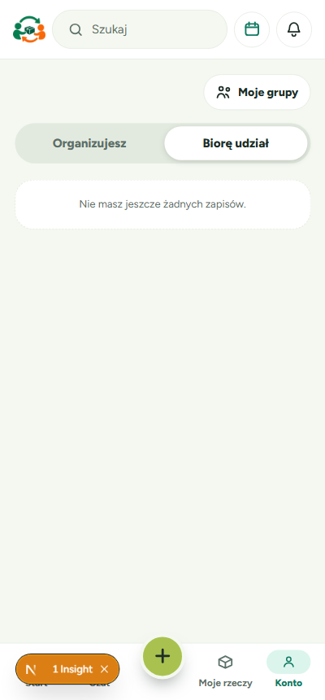
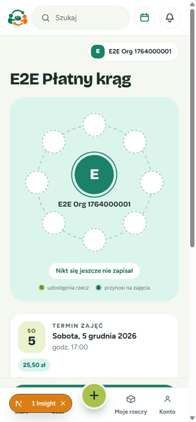

4.8 Re-signup keeps "Opłacone" — ✅ Passed
- ✅ Dialog shows the cost line; sign-up OK
- ✅ Footer and Moje zajęcia "✓ Opłacone"
- ✅ Organizer row normal again, "1 zapis · 0 dzieci · opłaceni: 1"
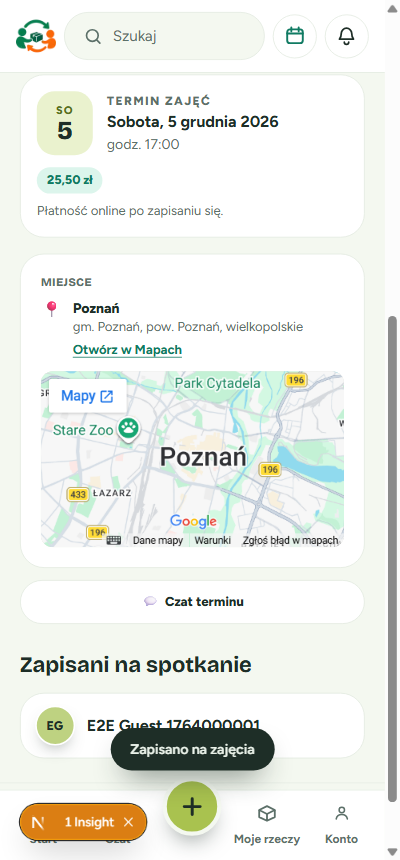

4.9 Free term (price cleared in "Edytuj termin") — ✅ Passed
- ✅ Edit prefilled, no create hint; clearing only the price → "Link wymaga ceny…"
- ✅ Clearing both saves a free term
- ✅ Organizer: no price, no opłaceni, 0 switches; guest: no badge, cost line or footer
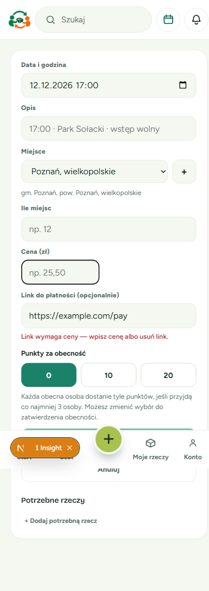
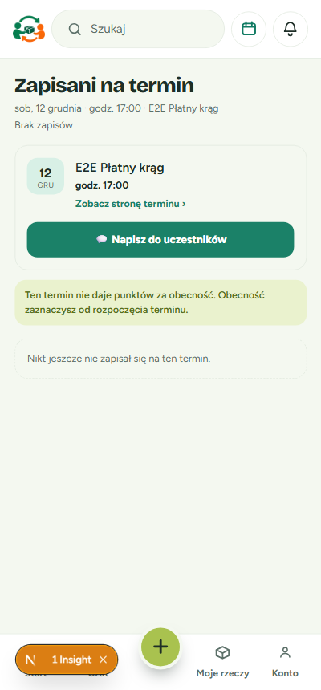
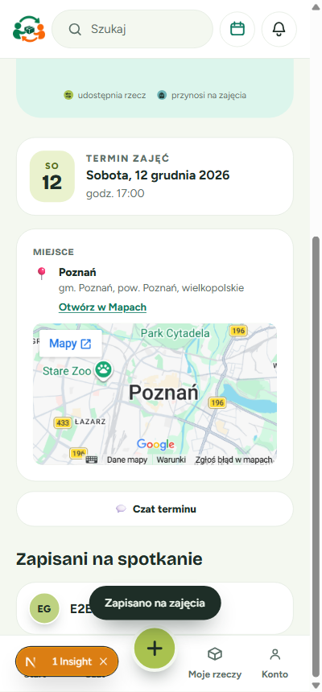
4.10 Extra: price without a link ("na miejscu") — ✅ Passed
- ✅ Inline "płatność na miejscu"; footer "Do zapłaty: 10,00 zł (na miejscu)" accent-soft
- ✅ Moje zajęcia shows both badges

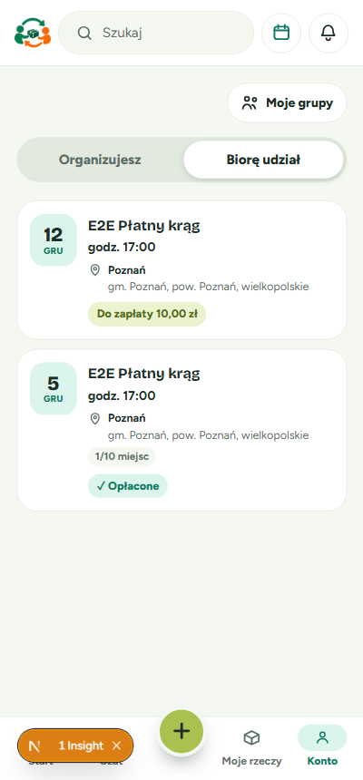
4.11 Extra: anonymous sees the price, never a status — ✅ Passed
- ✅ Badge + online line, no Zapłać/Opłacone
- ✅ No PAID value in any API response (/access has the key with no PAID value)

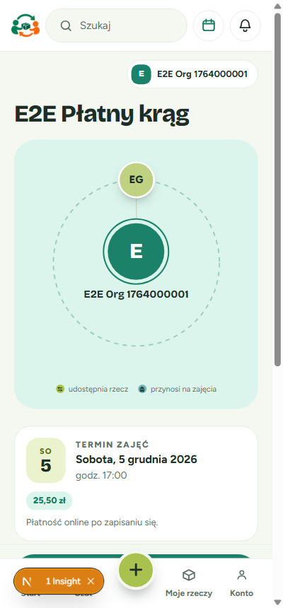
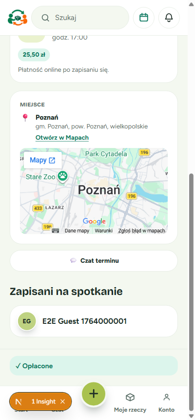
4.12 Re-check: withdraw a PAID attendance from "Moje zajęcia" (step 7') — ✅ Passed
- ✅ "Wypisz się" on each card
- ✅ PAID dialog shows the refund note
- ✅ Toast "Wypisano z terminu"; card removed
- ✅ Organizer: "wypisany — do zwrotu", presence disabled, switch on
- ⚠️ 5.3-2: both buttons have the same accessible name
Evidence: screenshots 29, 31, 32, 33 (see Re-check).
4.13 Re-check: re-signup keeps "Opłacone" (step 8') — ✅ Passed
- ✅ Dialog cost line; footer "✓ Opłacone", 0 "Zapłać"
- ✅ Moje zajęcia: 10 Dec "✓ Opłacone" back
- ✅ Organizer: normal row, switch on, "opłaceni: 1"
Evidence: screenshots 34, 35, 36.
4.14 Re-check: UNPAID dialog has no refund note; "Anuluj" does not withdraw — ✅ Passed
- ✅ No refund note for UNPAID
- ✅ "Anuluj": dialog closed, both attendances still active in the API
- ✅ UNPAID withdraw confirmed: toast, card removed
Evidence: screenshots 30, 37.
Discrepancies
resolved5.2-1 No UI to withdraw a term RSVP — ✅ resolved in the re-check
| Spec | Key Decisions / D4: "Withdrawing stays in 'Moje zajęcia', as today"; story "attendee who withdrew … sign up again" |
|---|---|
| Actual | SavedTermCard only has the pledge "Rezygnuję" buttons; withdrawMyAttendance (api/groups.ts:497) has no caller |
| Root cause | An existing gap: the term-RSVP withdraw UI was never built, or was dropped, while the API function stayed |
| Impact | The refund row and reactivation cannot be reached by real users |
| Fix | Add a "Wypisz się" + ConfirmDeleteDialog on the RSVP card that calls withdrawMyAttendance and invalidates the queries (its own task) |
| Workaround | API call with the attendee's own token only |
| Re-check | ✅ Resolved: SavedTermCard has "Wypisz się" with a confirmation, a PAID refund note and the toast "Wypisano z terminu". Verified for PAID, UNPAID and cancel (4.12–4.14; screenshots 29, 31–33) |
minor5.3-1 Sticky footer hidden behind the bottom nav (400 px)
| Actual | Footer top ≈ 785 px under the nav (≈ 789 px) at scroll top; the CTA's centre is not hit-testable; visible only at the end of the page. "＋ Zapisz się" does the same |
|---|---|
| Root cause | An existing layout issue: footer and nav are both sticky at bottom:0, and the nav paints on top |
| Fix | Offset the shared SignUpFooter by the nav height |
| Workaround | Scroll to the end |
minor5.3-2 Duplicate "Wypisz się" accessible names (same circle)
| Actual | With two terms of "E2E Wypis krąg", both buttons are "Wypisz się z terminu: E2E Wypis krąg"; the date is only in the card link |
|---|---|
| Root cause | The label uses only card.groupName (TermCards.tsx:305) |
| Impact | Ambiguous for assistive tech; the dialog does not name the term either |
| Fix | Add the date and time to the label (or aria-describedby pointing at the date); optionally name the term in the dialog |
| Workaround | Read in order: the card link with the date comes right before the button |
Console & network
| Request | Message | Note |
|---|---|---|
GET /api/organizations/mine | 404 | Baseline for accounts without an Organization |
GET /api/public/organizations/register | 404 | Self-inflicted (opened /register) |
GET /api/public/groups/…/terms/… | 404 | Self-inflicted probe URL |
POST /api/terms (re-check setup, outside the UI) | 500 | occurs_on with an offset (…+01:00); the UI format returned 201. Should be a 400; not caused by this feature |
No JS errors or failed feature requests (withdraw, RSVP, payment PUT). The Next dev tools showed a "1 Insight" badge (dev-only overlay); I did not act on it.
Spec alignment
- Fully implemented: circle defaults, shared error copy, term prefill/hint/override/free, price badge and payment lines, cost line, three footer states, Moje zajęcia badges, switch, counted-only counts, refund row, re-RSVP keeps PAID, privacy
- Withdraw control in Moje zajęcia with a confirmation, a PAID refund note and a toast (re-check)
- Partially: none (5.2-1 resolved)
- Not implemented: none (D4 accepted) · Extra behaviour: the PAID refund note in the withdraw dialog (new copy)
Variances: first run withdrew through the API; the re-check repeated steps 7–8 in the UI with new throwaway accounts and API-seeded data; second term used for the free check; presence was already disabled before the term start, so "disabled because withdrawn" could not be told apart; points+price badge row and the first-term stepper were not exercised.
Exit criteria
| Criterion | Status | Evidence |
|---|---|---|
| Circle defaults (Req 1) | ✅ | 4.1 |
| Term copy-by-value and override (Req 2) | ✅ | 4.2, 4.9 |
| Validation copy (Req 3, 11) | ✅ | 4.1, 4.2, 4.9 |
| Method derived (Req 4) | ✅ | 4.1 |
| Payment PUT, any state (Req 5, 6) | ✅ | 4.5, 4.7 |
| Organizer list rows and counts (Req 7) | ✅ | 4.7 |
| Status private (Req 8, 10) | ✅ | 4.11 |
| Re-RSVP keeps payment (Req 9) | ✅ | 4.8, 4.13 |
| Price before sign-up (Req 12) | ✅ | 4.3, 4.10 |
| Attendee payment state (Req 13) | ✅ | 4.4, 4.6, 4.10 |
| Organizer switch and refund row (Req 14) | ✅ | 4.5, 4.7 |
| Smoke step 7: withdraw from Moje zajęcia | ✅ | 4.12 (was ❌; 5.2-1 resolved) |
Recommendations
- Must fix before merge: none
- Should fix soon: 5.3-1 footer offset (existing); 5.3-2 add the date to the "Wypisz się" accessible name
- Nice-to-have: name the term in the withdraw dialog; a 400 instead of a 500 for an offset occurs_on; E2E for the first-term stepper and the price + points badge row
Conclusion: ⚠️ GO WITH CAVEATS. The Major gap 5.2-1 is resolved, and withdraw, refund row and re-signup now work end-to-end in the UI. Merge, and open small follow-ups for 5.3-1 and 5.3-2.